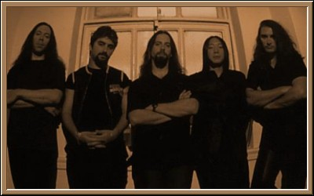
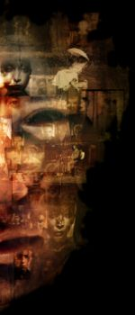

5/6 Sat. Seoul, Korea - Olympic Tennis Stadium]
|
저는 주말에 Dream Theater 공연에 갔었습니다. 한마디로 요약하면 감동이었습니다. 자주 CD로 들었던 음악을 실제로 눈앞에서 듣는 것은 정말 다른 느낌이더군요. 다른 공연에도 몇번 갔었는데, 그건 제가 CD로 가지고 있지 않은 밴드들의 음악이었거든요. 올림픽 테니스 경기장은 올림픽 공원 안에 있는 실외 경기장이었습니다. 실내 공연장 변변히 없는 우리 나라. 안타까왔지만, 공연 문화, 태도만큼은 선진국이었습니다. 약간 뒷편이었는데 야외라서인지 hall의 분위기는 안났지만, 라이브 공연의 맛은 충분했습니다. 가슴을 울릴 정도의 베이스 파워를 minor 밴드에서 느끼려는건 너무 욕심이었을까요? 늦게 예매하는 바람에 2층으로 밀려났는데, 기회만 있으면 맨앞으로 튀어 나갈려고 했거든요. 근데 안내인들 덕분(?)에 제자리를 지켜야만 했습니다. 저는 가사를 못외우고 후렴이나 겨우 따라 부르는 처지였는데 가사를 다 외우고 오시는 분들이 많더군요. 맨앞자리에 있는 분들이 정말 부러웠습니다. 드러머인 Mike Pornoy가 스틱을 여러개 던져줬는데. 오프닝 밴드없이 어두워지자 7시 30분쯤 되자 조명과 음악이 꺼지면서 그들의 가장 최근 앨범인 _Scenes From a Memory_의 시작음향, 시계소리와 Close your eyes.. 로 시작하더군요. 바로 눈앞에 보이는 Dream Theater 멤버들. 빠짐없이 일어서는 관중들. 환호소리. 공연이 끝날때까지 따라부르고, 박수치고, 흔들고, 소리지르고, 뛰었습니다. 야외라서 약간 쌀쌀한 날씨였는데 땀이 날 정도로요. _Scenes From a Memory_ 를 연주하던 중간에 지금까지 라이브에서도 못봤던 John Petrucci(G)와 Jordan Rudness(K)의 솔로가 있었구요. 아쉽게도 드러머인 Mike Portnoy의 솔로는 볼수 없었습니다. 하지만 그의 드럼은 연주가 아니라 드럼을 부수는 것 같더군요. 멀리 있어서 기타 연주나 키보드의 손 움직임을 자세히 볼수는 없었지만, 드럼만큼은 정말 화려했어요. 그렇게 연주하면서 어떻게 Asia(Korea/Japan) 투어를 마칠 수 있으런지. Asia 투어의 최초 공연이라서인지 몸을 사리는 것이 정말 아쉬웠습니다. 약 2시간 10분 정도 연주하고 인사하고 들어가버렸습니다. 관중의 앙콜을 Abba의 곡으로 잠재우고. _SFaM_의 전곡연주가 끝나자, Mike가 "모두 웃어요" 하더니 카메라를 들고와서 드럼쪽에 서고 나머지 멤버들이 관중을 배경으로 둘러서더니 기념사진을 찍은 모습을 보여줬습니다. Mike는 연주 도중에 스틱을 공중으로 던져 잡는 모습이라던지. 스틱을 관중에 던져준다던지 매우 익살스러운 모습으로 즐겁게 해줬습니다. 무대에는 30인치 정도 사이즈의 모니터가 예닐곱게 흩어져 있었고, 드럼에는 'Echo Hill'이 적혀 있었어요. 그리고 그리 화려하지는 않았지만, 정확한 조명, 제임스의 무대매너. 흐트러지지 않는 보컬. 라이브 비디오를 보면 가끔 제임스의 보컬이 고음부분에서 갈라지는 걸 느낄 수 있었는데, 오늘은 멤버 모두 컨디션이 매우 좋았던 것 같습니다. 훌륭했습니다. James Labrie(V)의 "Are you ready?" 라는 멘트와 함께 생각나는 곡들은 1집인 When Dream and Day Unite에서 A Fortune in Lies, The Killing Hand를 메들리로 조금씩 들려줬구요. EP인 A Change of Seasons에서 The Crimson Sunrise, Falling Into Infinity에서 New Millennium 의 일부를 들려줬던 것 같아요. Under A Glass Moon의 시작 기타 연주 부분. 그걸 직접 앞에서 들을 수 있으리라고 상상을 못했었습니다. 그 인트로 부분이 나올때는 환호만 하고 있었습니다. 그리고 Pull me Under와 Take the Time으로 관중과 함께 부르는 것으로 끝을 냈습니다. _SFaM_을 1부라고 하면 2부에서는 신나는 곡 위주로 관중을 열광시켰지만, 너무 아쉽게 끝났습니다. 저도 방방 뛸수 있는 나이가 아닌데도 힘이 남았습니다. 그런데 관객들의 앙콜 요청을 뒤로 사라진 DT 멤버들. 딱 두곡만 더 연주해줬으면 좋았을텐데. 개인적으로는 가끔 라이브에서 연주한다던 Pink Floyd나 Queen. 아니면 Drum Solo를 보고 싶었는데. 이번 공연이 거의 마지막처럼 보이는데, 아니라면 좋겠지만. 1-20년이 지난뒤 그들 중 한명을 만나거나, 예바동민끼리 모여 DT의 서울 공연 얘기를 할 때가 있겠죠? "옛날에 DT 개네들 공연. 죽여줬지.." 김남웅님이랑 강창우님과도 같이 같었는데, 역시 감동과 아쉬움이 교차된 표정이었습니다. 혹시나해서 playing list가 인터넷에 올라왔을까 뒤져 봤는데 어떤 분이 카메라 감독 옆에서 적어온게 있네요. 흠. 제가 Killing Hand라고 생각했던 곡은 A Fortune In Lies 였나봅니다. 어쨋든 1집곡도 있어서 너무 반가왔어요. 적고 보니까 가장 감명 깊었던 부분은 화려한 연주로 넋을 빼놓았던 Home, One last time(?) 과 Roger Water의 곡과 비슷한 The Spirit Carries On 그리고 2부의 A Fortune In Lies, Under a Glass Moon 이었던 것 같습니다. 2시간이 그렇게 빨리 지나가다니. 정말 아쉽습니다. Metropolis pt 2: Scenes From A Memory 1. Regression 2. Overture 1928 3. Strange Deja Vu 4. Through My Words 5. Fatal Tragedy 6. Beyond This Life 7. Through Her Eyes (Guitar solo) 8. Home 9. The Dance Of Eternity (Keyboard solo with theme from 'Universal Mind') 10. One Last Time 11. The Spirit Carries On 12. Finally Free (with horror ending video) Medley 1 1. intro of 'Mirror' 2. A Change Of Seasons part 2 (Innocence) 3. Just Let Me Breathe 4. Acid Rain (from LTE 2nd album) 5. Caught In A World Wide 6. New Millennium Medley 2 1. Pull Me Under 2. Under A Glass Moon 3. A Fortune In Lies 4. Only A Matter Of Time 5. Take The Time
저도 그 날 공연장에 있었더랬습니다. 후기 올려야지, 생각하면서도 주말에 바쁜일이 겹치는 바람에지쳐 잠들었는데 오늘 동장님 후기 보니까 그 날의 감동이되살아 나서 뒤늦은 후기 몇 자 더 보탭니다. > 저는 주말에 Dream Theater 공연에 갔었습니다. 한마디로 > 요약하면 감동이었습니다. 자주 CD로 들었던 음악을 > 실제로 눈앞에서 듣는 것은 정말 다른 느낌이더군요. 사실 전 공연 전까지는 DT에게서 별다른 느낌을 받질 못했어요. 작년 송도 트라이포트 공연을 다녀와서도 그랬구요. 초기 공연 때 steve howe와 close to the edge를 연주하는 DT의 모습 따위가 너무 인상 깊게 작용했기 때문이 아닐까, 싶습니다. 하지만 공연표 끊어놓고 5집도 시간나는대로 듣고, 공연장에서 왕따 당하지 않으려고 이번 5집 투어 부틀렉 cd를 구해 들으면서(구해 들었다기 보다는 만들어서^^) 공연에 대한 기대감을 가져보려고 노력했는데 결과는 동장님 말씀처럼 대만족이었습니다. medley 부분은 꽤 차이가 있지만 아래 주소로 가시면 mp3를다운 받으실 수 있습니다. http://dreamtheater.mit.edu/Live at the House of Blues, Orlando, Florida -- 03/03/00이외에도 DT의 다른 실황 mp3가 있습니다. >가슴을 울릴 정도의 베이스 파워를 minor 밴드에서 느끼려는건 > 너무 욕심이었을까요? 저 역시 공연장에 대해서는 한마디 하지 않을 수가 없네요. 공연장 크기는 어쩔수 없다치더라도 멀티비젼 하나 정도는충분히 설치할 수 있었던게 아닐까 싶습니다. 5집 전곡 연주였던만큼그들이 준비한 비디오 클립 역시 공연의 한 부분이었을텐데 그걸 조악한TV 모니터 몇 개로 때운 건 너무한 듯 싶습니다. 그 바람에 마지막 비디오를가재미눈으로 구경해야 했던 것도 우스운 일이구요. 아무리 연주장이 작다고는하지만 멤버들의 솔로 연주 부분은 역시 멀티비젼을 통해 보여줬어야 했었는데요. 베이스음을 제대로 살리지 못한 것은 큰 아쉬움이었습니다. 베이스음만 살았어도연주부분에서 전율감을 느꼈을 부분이 훨씬 더 늘어났을 것 같거든요. > _Scenes From a Memory_ 를 연주하던 중간에 지금까지 > 라이브에서도 못봤던 John Petrucci(G)와 Jordan Rudness(K)의 > 솔로가 있었구요. 아쉽게도 드러머인 Mike Portnoy의 솔로는 > 볼수 없었습니다. 하지만 그의 드럼은 연주가 아니라 드럼을 > 부수는 것 같더군요. 위에서 알려드린 부틀렉 cd에도 실려 있었던 솔로 부분이었는데요. 열혈 DT팬인 제 친구에 의하면 프로젝트 밴드인 liquid tension experiment의앨범 중 "universal mind"를 새롭게 편곡한 부분이라고 하네요. 하지만 이번 공연에서 솔로 부분은 부틀렉 것 보다 훨씬 훌륭했던 것 같습니다. 솔로 부분 연주 시간도 더 길었고, 박진감도 (물론 실제 공연장이긴 했지만)더했던 것 같습니다. 특히 Rudness의 키보드 솔로 부분은 황홀경의 극치였습니다. 개인적으로는 이번 공연의 가장 하이라이트 부분이었던 것 같습니다. > Asia 투어의 최초 공연이라서인지 몸을 사리는 것이 정말 > 아쉬웠습니다. 약 2시간 10분 정도 연주하고 인사하고 > 들어가버렸습니다. 관중의 앙콜을 Abba의 곡으로 잠재우고. 다음 스케쥴이 일본이라는 점에서 더 아쉬웠죠. 잘은 모르지만 한국공연도뒤늦게 중간에 끼워넣기식으로 일정이 잡힌 느낌인데다 앙콜곡도 받지않아서 정말 서운하더군요. 일본에선 무려 8번의 공연이라..... 동장님 말씀대로 그나마 Asia 최초 공연이라서 멤버들이 휴식기간을 가진 다음 무대에 설 수 있었다는 점을 위안으로 삼아야 될 듯 싶네요. 특히 부틀렉에서 들었던 라브리에의 보컬은 조금 깨는 분위기였는데 서울 공연에선 그런대로 괜찮은 것 같았어요. 초반부에 조금 삑싸리 나긴 했지만.^^carrot님께선 5집 위주의 선곡을 지적하셨지만 전 나름대로 만족이었습니다. 잠시도 쉬지 않고 무려 75분 가량의 앨범 전체를 완벽에 가깝게 재생한다는점은 제게 하나의 경이였기 때문이죠. 집으로 오면서 내내 가슴에 품고 온 아쉬움 한가지는 좀 더 프록적인 (사실 이 표현이 얼마나 두리뭉실한 것인지를 알면서도) 사운드를 공연장에서들을 수 없을까, 하는 점이었습니다. 드러머 탈퇴로 무한정 연기된 이창식님공연도 생각났구요.... 언제, 누가 성공하실런지는 몰라도 꼭 성사될 꽃대왕이나마릴련 라이브 무대도 그려보구, 당장 경비만 대주면 달려오겠다는 (이런 식구가 몇명인데...)after crying 공연은 어떨까도 생각해 보구요. 쩝~~~ > 김남웅님이랑 강창우님과도 같이 같었는데, 역시 감동과 > 아쉬움이 교차된 표정이었습니다. 김남웅님 공연가실지도 모른다는 소식 듣고 공연전에 계속 여기저기 두리번 거렸는데 세 분이 함께 오셨는데도 뵙질 못했네요. 전 A석에 있으면서역시 S석인가봐, 하고 있었는데.^^ 바로 뒷좌석에 최정욱님 께서 앉아 계시는바람에 얼결에 인사를 나눴습니다. 서로 일행이 없었더라면 소주라도 한 잔 하면서공연얘기했으면 좋았을텐데.... 담에 뵐 기회가 있겠죠. |
제가 직접 공연장에서 찍은 사진을 올리겠습니다. 기대해주세요.


|
Back to Previous Menu